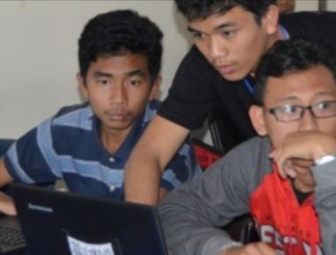
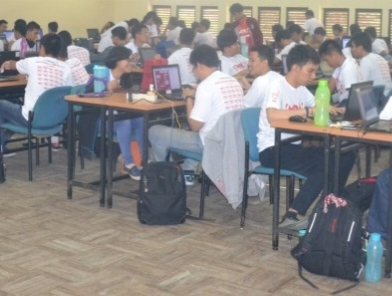

Program Pendidikan
| No | Fasilitas | Gambar | Teks |
|---|---|---|---|
| 1 | D3 Teknologi Informasi |  | Program Studi Teknologi Informasi Diploma Tiga adalah salah satu dari 3 (tiga) program studi yang dikelola oleh Institut Teknologi Del (IT Del) yang berdiri pada tahun 2001 sesuai SK No. 222/D/O/2001 tertanggal 28 September 2001 dengan nama Program Studi Teknologi Informasi. Program studi ini berlokasi di Jl. Sisingamangaraja, Desa Sitoluama, Kecamatan Laguboti, Toba Samosir, Propinsi Sumatera Utara berjarak kurang lebih 200 km (lima jam perjalanan mobil) dari Medan sebagai Ibukota Propinsi Sumatera Utara. Desa Sitoluama adalah suatu desa kecil yang berada di tepi Danau Toba dan dilalui oleh jalan raya lintas propinsi dan berjarak sekitar 10 KM dari Balige sebagai ibukota Kabupaten Tobasa. |
| 2 | D3 Teknologi Komputer |  | Program Studi Teknik Komputer adalah salah satu program studi yang diselenggarakan Institut Teknologi Del yang terletak di daerah pedesaan Tobasa, yang membuka peluang bagi siswa berprestasi untuk mengenyam pendidikan dengan mutu yang tidak kalah dengan pendidikan bermutu bagus yang diselenggarakan di kota besar. |